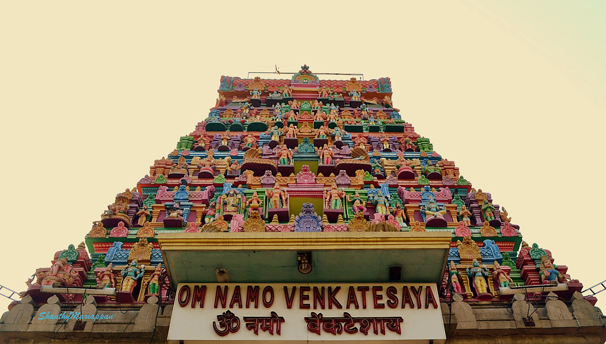
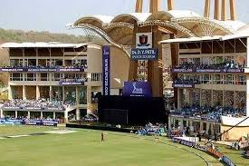
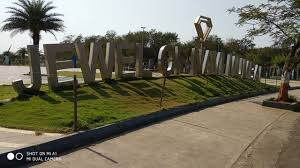
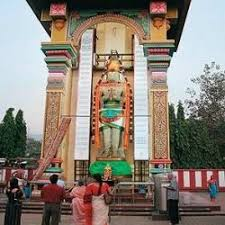

Nerul Balaji Temple

The Nerul Balaji Temple is an almost-exact replica of the Tirupati Balaji Temple, and also replicates certain aspects of the Venkateswara temple at Tirupati. It has been constructed according to the Shilpa Shastra. This temple is located on a small hill close to the western side of the Nerul railway station.
D Y Patil Sports Stadium

The DY Patil Sports Stadium is a football and a cricket stadium at D. Y. Patil campus at Nerul in Navi Mumbai, Maharashtra, India. It was designed by Hafeez Contractor. The stadium was officially inaugurated on 4 March 2008, and was briefly the home ground for IPL team Mumbai Indians.
Jewel Of Navi Mumbai

Jewel of Navi Mumbai by cycle is a 5 mile (11,000-step) route located near Seawoods, Navi Mumbai, India. This route has an elevation gain of about 23 ft and is rated as easy. Find the best walking trails near you in Pacer App.
Hanuman Temple of SIES

This temple situated in Nerul, New Mumbai / Navi Mumbai area has huge & tall idol of Lord Hanuman-ji. The idol is very inspiring & the atmosphere is calm & peaceful here. The height of the idol is approx 35 feet high. There are more smaller temple shrines inside this complex. A must visit temple if you in & around Navi Mumbai area. Highly recommend !!